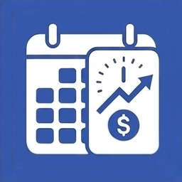

Salary Calculator
Salary Calculator is a simple and easy-to-use calculator for estimating gross pay, tax amount, and take-home pay.
Enter your gross salary, estimated tax rate, hours per week, and weeks per year, and the app automatically calculates estimated net pay.
You can convert salary between annual, monthly, weekly, and hourly pay to better understand your income across different pay periods.
This app is useful for comparing job offers, estimating take-home pay, checking hourly pay, planning monthly income, and understanding gross-to-net pay.
Features
- Estimate take-home pay quickly
- Enter annual, monthly, weekly, or hourly gross pay
- Enter your own estimated tax rate
- Automatically calculate estimated tax amount
- Calculate annual net pay
- Calculate monthly net pay
- Calculate weekly net pay
- Calculate hourly net pay
- Convert gross pay between annual, monthly, weekly, and hourly amounts
- Customize hours per week
- Customize weeks per year
- Clear results and start a new calculation easily
- Simple and clean design
- Optional ad removal
Frequently Asked Questions
-
Q: What does this app calculate?
A: The app estimates gross pay, tax amount, and take-home pay based on the salary amount, tax rate, hours per week, and weeks per year you enter.
-
Q: Does this app calculate official taxes automatically?
A: No. This app provides a simple estimate based on the tax rate you enter. It does not automatically calculate official federal, state, local, or payroll taxes.
-
Q: How do I estimate take-home pay?
A: Enter your gross pay and estimated tax rate. The app subtracts the estimated tax amount from gross pay to calculate estimated net pay.
-
Q: Can I enter hourly pay?
A: Yes. You can enter hourly gross pay, then set your hours per week and weeks per year to estimate annual, monthly, weekly, and hourly pay.
-
Q: Can I convert annual salary to monthly or hourly pay?
A: Yes. The app converts annual salary into monthly, weekly, and hourly amounts using your work schedule settings.
-
Q: Can I change hours per week?
A: Yes. You can customize hours per week to calculate hourly pay more accurately for your own work schedule.
-
Q: Can I change weeks per year?
A: Yes. You can customize weeks per year, which is useful for part-time work, seasonal work, or unpaid time off.
-
Q: What formula does the app use?
A: The app estimates tax amount as gross pay × tax rate ÷ 100. Estimated net pay is calculated as gross pay minus estimated tax amount.
-
Q: Does this app include deductions or benefits?
A: No. This app does not include deductions, benefits, overtime, retirement contributions, insurance, or local payroll rules.
-
Q: Can I remove ads?
A: Yes. You can remove banner ads with an optional in-app purchase.
-
Q: Do I need an internet connection?
A: The salary calculation itself works offline. An internet connection may be required to load ads or complete in-app purchases.
📩 Contact
If you have any questions or encounter issues, feel free to contact us:
← Back to Support Center